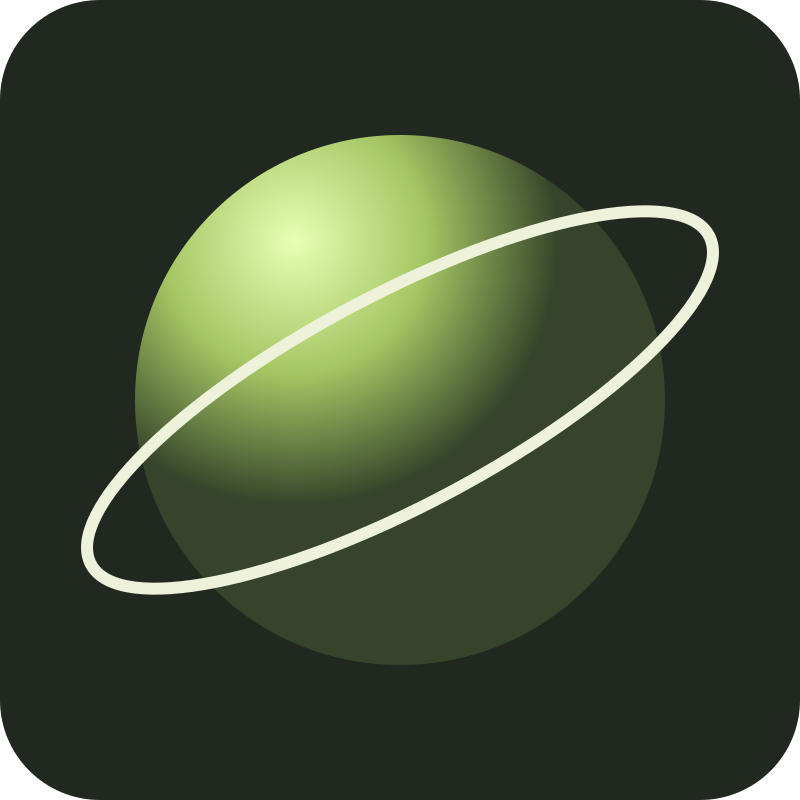

Orbit / Motion study
Meet Orbit.
A familiar object. A new point of view.

Orbit / Motion study
Meet Orbit.
A familiar object. A new point of view.
One small reveal, one deliberate click.
Orbit / Motion study
Make room
for the story.
The same image moves left and grows. The layout changes; the visual thread stays.
Orbit / Motion study
Let the
object lead.
A third composition. Go back to see the movement reverse.